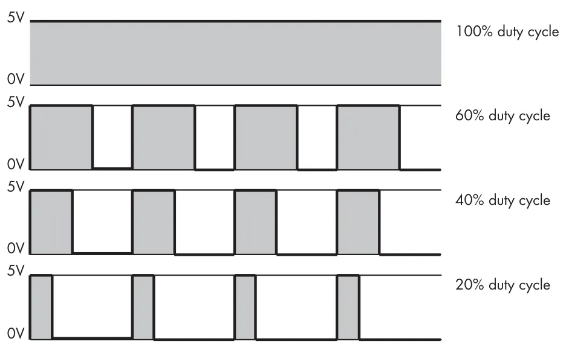
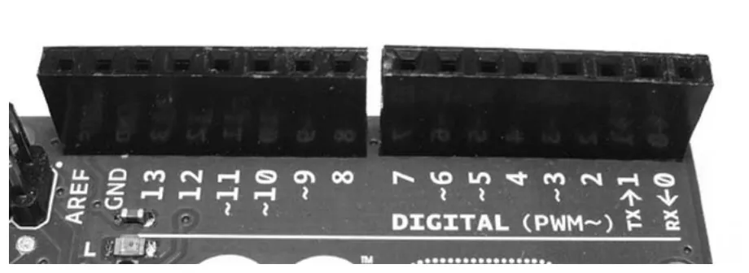

Rather than just turning LEDs on and off rapidly using digitalWrite(), we can define the level of brightness of an LED by adjusting the amount of time between each LED’s on and off states using pulse-width modulation (PWM). PWM can be used to create the illusion of an LED being on at different levels of brightness by turning the LED on and off rapidly, at around 500 cycles per second. The brightness we perceive is determined by the amount of time the digital output pin is on versus the amount of time it is off—that is, every time the LED is lit or unlit. Because our eyes can’t see flickers faster than 50 cycles per second, the LED appears to have a constant brightness.
The greater the duty cycle (the longer the pin is on compared to off in each cycle), the greater the perceived brightness of the LED connected to the digital output pin.
Figure 3-14 shows various PWM duty cycles. The filled-in gray areas represent the amount of time that the light is on. As you can see, the amount of time per cycle that the light is on increases with the duty cycle.

Only digital pins 3, 5, 6, 9, 10, and 11 on a regular Arduino board can be used for PWM. They are marked on the Arduino board with a tilde (~), as shown in Figure 3-15.

To create a PWM signal, we use the function analogWrite(x, y), where x is the digital pin and y is a value for the duty cycle, between 0 and 255, where 0 indicates a 0 percent duty cycle and 255 indicates 100 percent duty cycle.